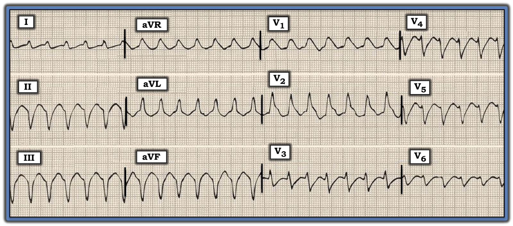
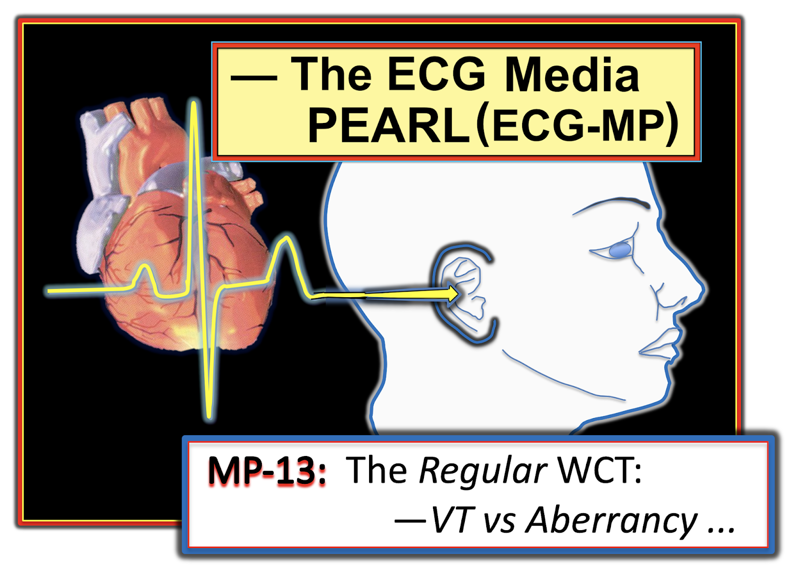
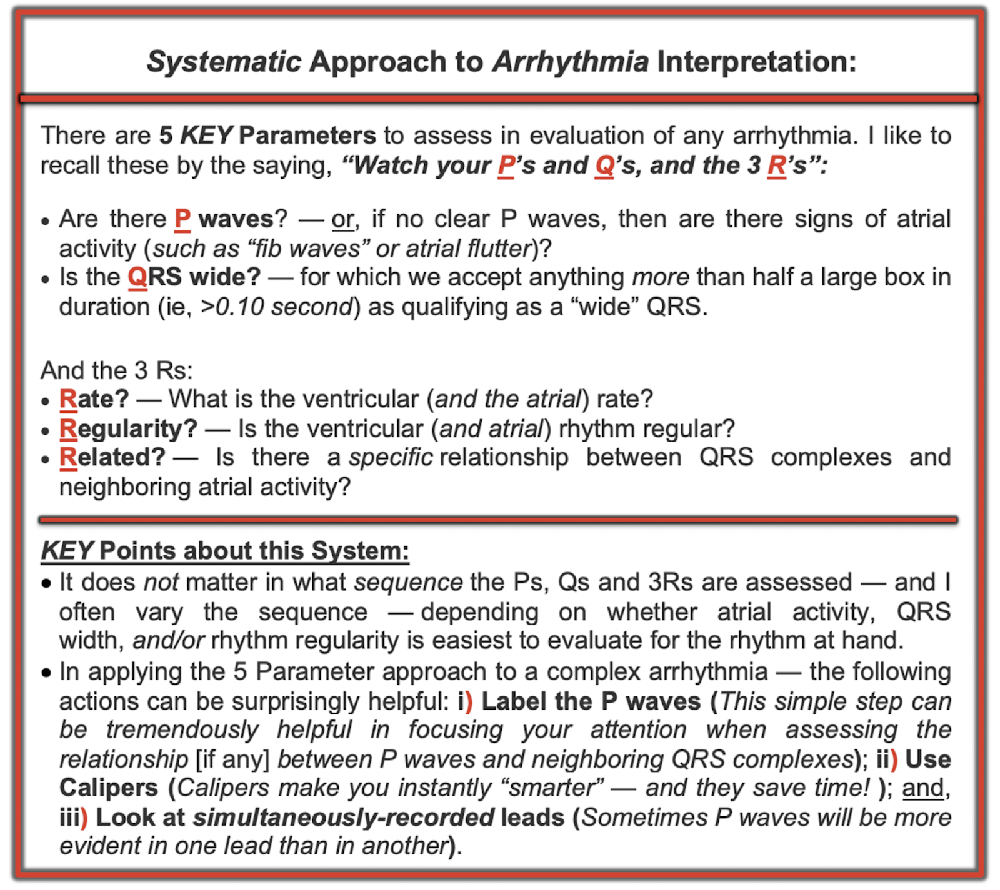

ECG Blog #196: VT hay dẫn truyền lệch hướng? Adenosine?
Điện tâm đồ trong Hình-1 được ghi ở một người đàn ông 55 tuổi có tiền sử bệnh mạch vành đã biết. Bệnh nhân ổn định về huyết động tại thời điểm ghi bản ghi này.
CÂU HỎI: Phương án nào sau đây là câu trả lời ĐÚNG NHẤT về nhịp được thể hiện trong Hình-1?
Các phương án lựa chọn:
- Phương án A: Khả năng nhịp này là VT (nhịp nhanh thất – Ventricular Tachycardia) vào khoảng 50%.
- Phương án B: Khả năng nhịp này là VT vào khoảng 70-80%.
- Phương án C: Khả năng nhịp này là VT trên 95%.
- Phương án D: Nhịp này nhiều khả năng là SVT (nhịp nhanh trên thất – SupraVentricular Tachycardia) kèm dẫn truyền lệch hướng.
- Phương án E: Nhịp này có khả năng ngang nhau là bất kỳ một trong 3 khả năng sau: i) SVT kèm dẫn truyền lệch hướng; ii) AVRT (nhịp nhanh vào lại nhĩ thất – AtrioVentricular Reciprocating Tachycardia) ở bệnh nhân có WPW; hoặc iii) VT.
CÂU HỎI THÊM:
- Có nên dùng Adenosine để điều trị cho bệnh nhân bị rối loạn nhịp này không?


=======================================
LƯU Ý #1: Đến đây, một số bạn đọc có thể muốn nghe bài ECG Audio dài 13 phút trước khi đọc Suy nghĩ của tôi về nhịp trong Hình-1. Bạn có thể xem phần Suy nghĩ của tôi vào bất kỳ lúc nào (nằm bên dưới ECG MP-13).
=======================================


ECG Media PEARL #13a (Audio dài 12:20 phút) hôm nay — trình bày “Quan điểm của tôi” về cách đánh giá WCT đều (nhịp nhanh QRS rộng – Wide-Complex Tachycardia) khi không có sóng P xoang — kèm các mẹo để phân biệt giữa VT với SVT có BBB từ trước hoặc có dẫn truyền lệch hướng.
LƯU Ý: Tôi đã không nói về VT phân nhánh (fascicular VT) trong Pearl (MP-13) Audio hôm nay. Đây là một ngoại lệ quan trọng về hình dạng của VT, trong đó hình thái QRS có thể giống RBBB/LAHB hoặc RBBB/LPHB.
- Tôi bàn chi tiết về VT phân nhánh (và các VT vô căn khác) trong ECG Blog #197.
=========================================
CÁCH TIẾP CẬN CỦA TÔI với nhịp trong Hình-1:
“Tin tốt” trong case này — là bệnh nhân ổn định về huyết động tại thời điểm ghi nhịp. Điều đó có nghĩa là chưa cần sốc điện chuyển nhịp đồng bộ ngay — nhờ vậy có được một chút thời gian để đánh giá nhịp kỹ hơn.
Như mọi khi — tôi thấy quy trình đọc rối loạn nhịp chính xác nhất và tiết kiệm thời gian nhất là dùng Cách tiếp cận Ps, Qs & 3R. Như tôi đã nhấn mạnh trong ECG Blog #185 (và như tôi nhắc lại trong Hình-4 ở Phần bổ sung bên dưới) — thứ tự đánh giá Ps, Qs và 3R không quan trọng — và, tôi đã thay đổi thứ tự dưới đây cho bản ghi hôm nay, dựa trên những thông số dễ đánh giá nhất đối với nhịp trong Hình-1. Như vậy, — tôi ghi nhận như sau:
- Nhịp trong Hình-1 nhanh và đều (Regular). Tần số (Rate) thất là ~170/phút.
- Phức bộ QRS rộng.
- Sóng P không có.
- Thông số thứ 5 là chữ R thứ 3, viết tắt của “Related” (liên quan). Nhưng vì không xác định được sóng P nào trong Hình-1 — nên không có gì để nhận xét về chữ R thứ 3 này.
NHẬN ĐỊNH về nhịp trong Hình-1:
Theo Cách tiếp cận Ps, Qs, 3R — chúng ta đã mô tả một Nhịp WCT ( = nhịp nhanh QRS rộng – Wide-Complex Tachycardia) đều ở tần số ~170/phút, không có dấu hiệu rõ ràng của hoạt động nhĩ.
- Đáng tiếc — không có dải nhịp chuyển đạo dài ghi đồng thời trong Hình-1. Dù vậy — trong case hôm nay thực sự không cần dải nhịp chuyển đạo dài để chẩn đoán.
- Như đã nhấn mạnh trong ECG Media PEARL #13 (ở trên) hôm nay — chẩn đoán phân biệt của một nhịp WCT đều không có hoạt động nhĩ gồm: i) VT (nhịp nhanh thất – Ventricular Tachycardia); ii) SVT (nhịp nhanh trên thất – SupraVentricular Tachycardia) kèm BBB (blốc nhánh – Bundle Branch Block) có từ trước; iii) SVT kèm dẫn truyền lệch hướng; hoặc, iv) Một thứ gì khác? (tức là, WPW).
- Theo y văn — xác suất thống kê để một WCT đều không có bằng chứng hoạt động nhĩ hóa ra là VT bắt đầu từ ~80% — và, tăng lên ≥90% nếu bệnh nhân ở một “độ tuổi nhất định” (tức là, từ trung niên trở lên) và có bệnh tim nền. Vì vậy, ngay cả trước khi xem xét các dấu hiệu điện tâm đồ cụ thể trong Hình-1, như trục mặt phẳng trán và hình thái QRS — khả năng WCT đều này hóa ra là VT ở người đàn ông 55 tuổi có bệnh mạch vành này là ít nhất 90%.
XEM XÉT thêm — LƯU Ý lâm sàng:
Thực tế lâm sàng — là nhân viên cấp cứu thường phải bắt đầu điều trị nhịp nhanh trước khi chắc chắn 100% chẩn đoán nhịp cụ thể. Trong case hôm nay — hoàn toàn hợp lý khi chấp nhận khả năng ≥90% là VT ở thời điểm này của case — và điều trị cho bệnh nhân theo hướng đó.
- Như đã nêu — việc bệnh nhân trong case hôm nay ổn định về huyết động với nhịp trong Hình-1 có nghĩa là chưa cần sốc điện chuyển nhịp ngay, và thử điều trị bằng thuốc chống loạn nhịp là hợp lý. NẾU bệnh nhân xấu đi vào bất kỳ lúc nào trong quá trình đánh giá và điều trị — KHI ĐÓ sốc điện chuyển nhịp trở thành chỉ định ngay lập tức.
- Có thể thử một số lựa chọn điều trị chống loạn nhịp, phổ biến nhất gồm Amiodarone hoặc Procainamide đường tĩnh mạch (IV). Tùy theo lựa chọn của người điều trị, khả năng sẵn có, và thông lệ/phác đồ tại cơ sở — có thể chọn một trong hai lựa chọn này.
- Mặc dù Adenosine đã được khuyến cáo dùng theo kinh nghiệm để điều trị một nhịp WCT đều chưa rõ căn nguyên — thuốc này khó có hiệu quả nếu nhịp là VT đa dạng hoặc VT do thiếu máu cục bộ. Vì vậy, dù không hẳn là “sai” khi cho bệnh nhân trong case hôm nay dùng Adenosine — nhưng xét tiền sử bệnh mạch vành đã biết của bệnh nhân, cùng hình thái quá rộng và vô định hình (không giống bất kỳ dạng rối loạn dẫn truyền nào đã biết) — thì căn nguyên thiếu máu cục bộ của VT ở bệnh nhân này là cực kỳ có khả năng. Do đó — có lẽ tốt nhất là không thử Adenosine ở bệnh nhân này (Tóm tắt ưu và nhược điểm của việc dùng Adenosine được trình bày trong Hình-5 và Hình-6 ở Phần bổ sung bên dưới).
Liệu chúng ta có thể tăng mức độ chắc chắn rằng nhịp này là VT?
Mặc dù bắt đầu điều trị chống loạn nhịp cho một VT được giả định là ổn định về huyết động là hợp lý ở thời điểm này (với khả năng ~90% rằng nhịp WCT trong Hình-1 đúng là VT) — Chẳng phải sẽ tốt hơn nếu đạt được mức độ chắc chắn cao hơn nữa cho chẩn đoán nhịp sao? Nhận thấy có rất nhiều tiêu chuẩn trong y văn để phân biệt nhịp VT với SVT — tôi muốn trình bày cách tiếp cận của mình, vốn đã giúp tôi rất tốt qua nhiều năm về mặt tiết kiệm thời gian và độ chính xác.
- Tôi bắt đầu bằng việc chú ý tới “3 Quy tắc Đơn giản” được trình bày trong Hình-2. Áp dụng các quy tắc này cho Nhịp WCT đều trong case hôm nay (mà chúng ta đã thấy trong Hình-1) — có trục lệch cực độ (xác định bởi QRS âm hoàn toàn ở chuyển đạo aVF) — QRS ở chuyển đạo V6 gần như âm hoàn toàn (chỉ có một sóng r cực nhỏ ở chuyển đạo này) — và, phức bộ QRS vừa cực kỳ rộng vừa "xấu xí" ở nhiều chuyển đạo (không giống bất kỳ dạng rối loạn dẫn truyền nào đã biết — với QRS gần như vô định hình ở chuyển đạo V1).
- Kết luận: Chỉ cần đáp ứng bất kỳ một trong 3 Quy tắc Đơn giản cũng đã làm tăng đáng kể khả năng VT so với ước tính ban đầu ~90% của chúng ta. Việc cả 3 Quy tắc này đều dương tính sẽ đưa khả năng là VT lên hơn hẳn 95%.
- Điểm CHÍNH: Một khi đã quen với các quy tắc — “con mắt được đào tạo” của bạn sẽ chỉ mất không quá vài giây để nhận ra rằng nhịp WCT đều, nhanh, không có sóng P trong Hình-1 có trục mặt phẳng trán lệch cực độ — QRS gần như âm hoàn toàn ở chuyển đạo V6 — và, hình thái QRS “xấu xí” ở nhiều chuyển đạo.

Vượt ra ngoài phần cốt lõi:
“Cái hay” của 3 Quy tắc mà tôi minh họa trong Hình-2 (và trong ECG Media PEARL #13) hôm nay — là sự đơn giản và tốc độ áp dụng các quy tắc này tại giường bệnh. Ở mức khái niệm nâng cao hơn — tôi sẽ bổ sung 2 đặc điểm điện tâm đồ khác cần cân nhắc, có liên quan đến case hôm nay.
- Dấu hiệu sóng R đơn pha dương hoàn toàn ở chuyển đạo aVR trong một nhịp WCT đều có độ đặc hiệu gần như 100% cho chẩn đoán VT. Lý do — là sóng R đơn pha ở chuyển đạo aVR trong nhịp WCT cho thấy xung điện phải xuất phát từ một vị trí ở mỏm thất, và đi ngược lên về phía đáy tim (tức là, theo hướng của chuyển đạo aVR). Các nhịp SVT không xuất phát từ mỏm tim. Đáng tiếc — độ nhạy của dấu hiệu này không cao (tức là, không thường gặp sóng R đơn pha ở chuyển đạo aVR trong nhịp WCT). Dù vậy — khi có dấu hiệu này (như thấy qua QRS dương hoàn toàn ở chuyển đạo aVR trong Hình-1) — chẩn đoán VT được khẳng định!
- Đánh giá hình thái QRS có thể giúp ích! Như tôi đã ghi trong Hình-2 — dẫn truyền lệch hướng hầu như luôn biểu hiện một dạng rối loạn dẫn truyền nào đó (tức là, RBBB, LBBB, LAHB, LPHB — hoặc một kiểu phối hợp giữa chúng). NẾU chứng minh được hình thái RBBB điển hình của phức bộ QRS ở chuyển đạo V1 trong nhịp WCT — thì căn nguyên trên thất trở nên nhiều khả năng hơn hẳn (Hình-3). Trong case hôm nay — hình thái QRS ở chuyển đạo V1 lại cho thấy điều ngược lại. Như vậy, hình thái QRS gần như vô định hình ở chuyển đạo V1 trong Hình-1 càng củng cố thêm rằng nhịp ở đây là VT.

==============================
Các bài ECG Blog liên quan đến case hôm nay:
- ECG Blog #220 — Đi từng bước qua một Nghiên cứu ca bệnh chi tiết về nhịp WCT đều (Audio Pearl về thế nào là Ổn định huyết động?).
- ECG Blog #42 — Tổng quan toàn diện các tiêu chuẩn phân biệt VT với Dẫn truyền lệch hướng.
- Phân tích một case nhịp WCT đều ở một phụ nữ ngoài 80 tuổi — Xem Bình luận của tôi trong bài đăng ngày 5 tháng 5 năm 2020 trên Dr. Smith’s ECG Blog.
- Một case khác về nhịp WCT đều ở một phụ nữ ngoài 60 tuổi — Xem Bình luận của tôi ở cuối trang trong bài đăng ngày 15 tháng 4 năm 2020 trên Dr. Smith’s ECG Blog.
- ECG Blog #38 và Blog #85 — Tổng quan về VT phân nhánh.
- ECG Blog #35 — Tổng quan về VT RVOT
- Tổng quan về các VT vô căn (tức là, VT phân nhánh; VT RVOT và LVOT) — Xem Bình luận của tôi ở cuối trang trong bài đăng ngày 7 tháng 9 năm 2020 trên Dr. Smith’s ECG Blog.
- Tổng quan về một loại VT khác (VT đa hình thái – Pleomorphic VT) — Xem Bình luận của tôi trong bài đăng ngày 1 tháng 6 năm 2020 trên Dr. Smith’s ECG Blog.
==============================
PHẦN BỔ SUNG (ngày 20 tháng 2 năm 2021):
- Tôi thường xuyên muốn nhấn mạnh cách tiếp cận hệ thống của mình trong việc đọc nhịp. Các liên kết liên quan tới bài tổng quan dạng audio — video — và pdf về chủ đề này có trong ECG Blog #185 của tôi. Tôi tái hiện 5 yếu tố CHÍNH trong cách tiếp cận của mình ở Hình-4 bên dưới.
- Adenosine là một thuốc tuyệt vời trong điều trị cấp cứu các SVT vào lại. Thuốc cũng có hiệu quả với một số ít nhịp VT đáp ứng với adenosine (chủ yếu ở người trưởng thành trẻ tuổi không có bệnh tim nền). Nhờ thời gian bán thải cực ngắn sau khi tiêm tĩnh mạch (IV) — thuốc thường an toàn khi dùng theo kinh nghiệm cho bệnh nhân có nhịp WCT chưa rõ căn nguyên. Dù vậy — tác dụng phụ có thể xảy ra, và không phải lúc nào cũng ngắn ngủi. Vì vậy — có lẽ tốt nhất nên tránh dùng thuốc này cho các nhịp WCT mà thuốc ít hoặc không có cơ hội hiệu quả (tức là, VT đa dạng; VT do căn nguyên thiếu máu cục bộ). Trong Hình-5 và Hình-6 — tôi tái hiện phần nói về ưu và nhược điểm của việc dùng Adenosine (trích từ ACLS-2013-ePub của tôi).

